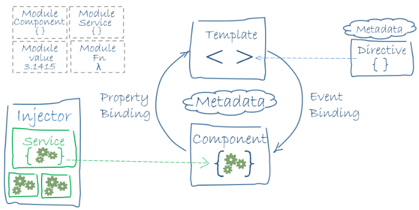

Angular is a Single Page Application Framework for writing applications in HTML5/CSS3 using either pure JavaScript, Dart or TypeScript. TypeScript is transpiled to JavaScript. Find a brief introduction to TypeScript here. Since the Angular and Ionic Teams use this extension of JavaScript we know what must be done. I encourage you to code through the hero tutorial and become an Open Source Hero. For all who do good and make humanity advance, pure of heart and with no personal gain intentions is a hero. Angular is hero technology and once you have worked through the tutorial you will understand the purity and beauty of this technology for writing single page applications. The framework consists of many libraries, some of them core, some of them optional. You write Angular applications by composing HTML templates with Angularized markup, writing component classes to manage those templates, adding application logic in services and boxing components and services in modules. Then you launch the app by bootstrapping the root module Angular takes over, presenting your application content in a browser, I recommend Chrome for development and newest standards reasons. Everybody develops and browses in Chrome today. Another good alternative is Firefox from Mozilla, also good for development and browsing. Even though Chrome has superior functionalities to be perfectly honest. Angular responds to user interactions in the browser according to instructions you've provided.
Let's have a look at the big picture:
Angular apps are modular and Angular has its own modularity system called Angular modules or NgModules. Angular modules are a big deal. This page introduces modules; the Angular modules page covers them more in depth. Every Angular app has at least one Angular module class, the root module, conventionally named AppModule. While the root module may be the only module in a small application, most apps have many more feature modules, each a cohesive block of code dedicated to an application domain, a work flow, or a closely related set of capabilities. An Angular module, whether a root or feature, is a class with an @NgModule decorator. Decorators are functions that modify JavaScript classes. Angular has many decorators that attach metdata to classes so that it knows what those classes mean and how they should work. Learn more about decorators on the web.
NgModule is a decorator function that takes a single metadata object whose properties describe the module. The most important properties are:
Here's a simple root module:
app/app.module.ts
import {{'{'}} NgModule {{'}'}} from '@angular/core';
import {{'{'}} BrowserModule {{'}'}} from '@angular/platform-browser';
@NgModule({{'{'}}
imports: [BrowserModule],
providers: [Logger],
declarations: [AppComponent],
exports: [AppComponent],
bootstrap: [AppComponent]
{{'}'}})
export class AppModule {{'{'}}{{'}'}}
The export of AppComponent is just to show how to export; it isn't actually necessary in this example. A root module
has no reason to export anything because other components don't need to import the root module.
Launch an application by bootstrapping its root module. During development you're likely to bootstrap the AppModule in a main.ts file like this one.
app/main.ts
import {{'{'}}platformBrowserDynamic{{'}'}} from '@angular-platform-browser-dynamic';
import {{'{'}}AppModule{{'}'}} from './app.module';
platformBrowserDynamic().bootstrapModule(AppModule);
The Angular module -- a class decorated with @NgModule -- is a fundamental feature of Angular. JavaScript also has its own module system for managing collections of JavaScript objects. It's completely different and unrelated to the Angular module system. In JavaScript each file is a module and all objects defined in that file belong to the module. The module declares some objects to be public by marking them with the export key word. Other JavaScript modules use import statements to access public objects from other modules.
import {{'{'}}NgModule{{'}'}} from '@angular/core';
import {{'{'}}AppComponent{{'}'}} from './app.component';
export class AppModule{{'{'}}{{'}'}}
Learn more about the JavaScript module system on the web.
These are two different and complementary module systems. Use them both to write your apps.
Angular ships as a collection of JavaScript modules. You can think of them as library modules. Each Angular library name begins with the @angular prefix. You install them with the npm package manager and import parts of them with JavaScript import statements.
For example, import Angular's Component decorator from the @angular/core library like this:
import {{'{'}}Component{{'}'}} from '@angular/core';
You also import Angular modules from Angular libraries using JavaScript import statements:
import {{'{'}}BrowserModule{{'}'}} from '@angular/platform-browser';
In the example of the simple root module above, the application module needs material from within that BrowserModule. to access that material , add it to the @NgModule metadata imports like this.
imports: [BrowserModule],
In this way you are using both the Angular and JavaScript module systems together.
Say hello to Carmen view she stands strong. A component controls a patch of screen called a view. For example, the following views are controlled by components: the app root with the navigation links, the list of heroes, the hero editor. You define a component's application logic -- what it does to support the view -- inside a class. The class interacts with the view through an API of properties and methods. For example, this HeroListComponent has a heroes property that returns an array of heroes that it acquires from a service. HeroListComponent also has a selectHero() method that sets a selectedHero property when the user clicks to choose a hero from that list.
app/hero-list.component.ts(class)
export class HeroListComponent implements OnInit {{'{'}}
heroes: Heroes[];
selectedHero: Hero;
constructor(private heroService: HeroService) {{'{'}}{{'}'}}
ngOnInit() {{'{'}}
this.heroes = this.heroService.getHeroes();
{{'}'}}
selectHero(hero: Hero) {{'{'}} this.selectedHero = hero;{{'}'}}
{{'}'}}
Angular creates, updates, and destroys components as the user moves through the application. Your app can take action at each moment in the lifecycle through optional lifecycle hooks, like ngOnInit declared above.
You define a component's view with its companion template. A template is a form of HTML that tells Angular how to render the component. A template looks like regular HTML, except for a few differences. An HTML template contains Angularized markup and Web Components, the HTML is rendered dynamic by injecting functionality thanks to JavaScript. Angular is HTML6 today.
To enable you to rapidly create a new Angular 2 project we can use the tool: Angular CLI. Open up your terminal, bash or command prompt and type in: important: both Angular CLI and your generated project have dependencies that require Node 4 or higher, together with NPM 3 or higher.
npm install -g angular-cli
Usage: lists all the available features
ng help
Generate and serve an Angular 2 project via a development server
ng new MY_AWESOME_NEW_ANGULAR2_PROJECT_NAME
cd MY_AWESOME_NEW_ANGULAR2_PROJECT_NAME
ng serve
Navigate to http://localhost:4200/. The app will automatically reload if you change any of the source files.
You can configure the default HTTP port and the one used by the LiveReload server with two command-line options:
ng serve --host 0.0.0.0 --port 4201 --live-reload-port 49153
You can use the ng generate (or just ng g) command to generate Angular components
ng generate component my-new-hero-component
ng g component my-new-hero-component # using the alias
# components support relative path generation
# if in the directory src/app/feature and you run
ng g component new-awesome-component
# your component will be generated in the src/app/feature/new-awesome-component
# but if you were to run
ng g component ../newer-more-awesome-component
# your component will be generated in src/app/newer-more-awesome-component
You can find all possible blueprints below
COMPONENT: ng g component my-new-awesome-component
DIRECTIVE: ng g directive my-new-awesome-directive
PIPE: ng g pipe my-new-awesome-pipe
SERVICE: ng g service my-new-awesome-service
CLASS: ng g class my-new-awesome-class
INTERFACE: ng g interface my-new-awesome-interface
ENUM: ng g enum my-new-awesome-enum
MODULE: ng g module my-new-awesome-module
Generating a route
Generating routes in the CLI has been disabled for the time being. A new router and new route generation blueprints are coming. You can read the official documentation for the new Router: Read More Router Here. Please note that even though route generation is disabled, building your projects with routing is still fully supported.
Creating a build
ng build
the build artifacts will be stored in the dist/ directory
Build Targets and Environment Files
ng build can specify both a build target (--target=production or --target=development) and an environment file to be used with that build (--environment=dev or --environment=prod). By default, the development build target and environment are used.
The mapping used to determine which environment file is used can be found in angular-cli.json
"environments": {{'{'}}
"source": "environments/environment.ts",
"dev": "environments/environment.ts",
"prod": "environments/environment.prod"
{{'}'}}
These options also apply to the serve command. If you do not pass a value for environment, it will default to dev for development and prod for production.
#these are equivalent
ng build --target=production --environment=prod
ng build --prod --env=prod
ng build --prod
#and so are these
ng build --target=development --environment=dev
ng build --dev --e=dev
ng build --dev
ng build
You can also add your own env files other than dev and prod by doing the following:
create a src/environments/environment.NAME.ts add {{'{'}}"NAME": 'src/environments/environment.NAME.ts' {{'}'}} to the app[0].environments object in angular-cli.json use them via the --env=NAME flag on the build/serve commands.
Base tag handling in index.html
When building you can modify base tag (<base href="/">) in your index.html with --base href your-url option.
#Sets base tag href to /myUrl/ in your index.html
ng build --base-href /myUrl/
ng build --base-href /myUrl/
Bundling
All builds make use of bundling, and using the --prod flag in the ng build --prod or ng serve --prod will also make use of uglifying and tree-shaking functionality. Read more about these sophisticated, advanced features in the documentation.
Running unit tests
ng test
Tests will execute after a build is executed via Karma, and it will automatically watch your files for changes. You can run tests a single time via --watch=false or --single-run. You can run tests with coverage via --code-coverage. The coverage reports will be in the coverage/ directory. Linting during tests is also available via the --lint flag. See Linting and formatting code chapter for more informations.
Running end-to-end test
ng e2e
Before running the tests make sure you are serving the app via ng serve.
End-to-end tests are run via Protractor
.Now it's time to code ...
For a free world, for free software, for shared knowledge, for innovation, for progress, for a better future for future generations...
Get Started with The Tour Of Heroes Now and become an Open Source Hero.